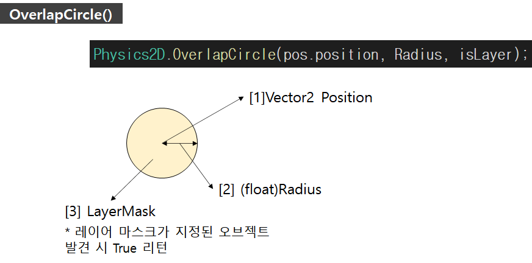
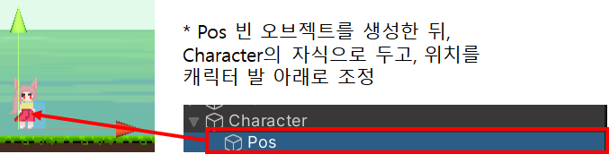
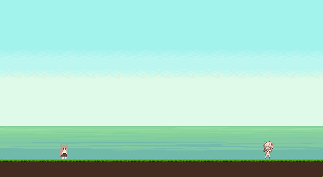

#OverlapCircle()
#플레이어점프
*개인적인 유니티 공부 내용을 정리한 글으로, 잘못된 내용이 있을 수 있습니다.
#OverlapCircle()
OverlapCircle()은 Physics2D에 정의되어 있는 메서드로, [1] Vector2 위치 좌표 [2] 반지름(Radius) 실수 값 [3] 레이어 마스크(Layer Mask) 총 3개의 파라미터를 가집니다.
파라미터로 전달한 [1] Vector2 위치 좌표 를 기준으로, [2] 반지름(Radius) 만큼의 원을 생성하고, 그 주변에 충돌 (Collider) 컴퍼넌트가 부착된 오브젝트가 있는지 탐색합니다. 만약 파라미터로 [3] 레이어 마스크 를 전달 했다면, 해당 하는 레이어 마스크가 지정된 게임 오브젝트가 있는지 검사해 , 만약 탐색 범위에 존재 한다면 참(True)값을 반환 합니다.

#플레이어 점프
OverlapCirce() 메서드를 이용하면, 플레이어 점프를 구현할 수 있습니다. 땅 오브젝트에 [3] 레이어 마스크 를 부착해 준 뒤, bool 형 isGround 변수를 선언해 , 반환 값을 리턴 받았습니다. 만약 isGround가 false라면 플레이어는 공중에 떠 있는 상태일 테니 점프를 제한 합니다. 또한 플레이어의 점프는 rigid.velocity를 이용했습니다.
* 코드
public class PlayerMove : MonoBehaviour
{
Rigidbody2D rigid;
[SerializeField] private float speed;
[SerializeField] private float jumpPower;
[SerializeField] Transform pos;
[SerializeField] float Radius;
[SerializeField] LayerMask isLayer;
bool isGround;
void Awake()
{
rigid = GetComponent<Rigidbody2D>();
}
void Update()
{
isGround = Physics2D.OverlapCircle(pos.position, Radius, isLayer);
// 점프 코드
if (isGround && Input.GetKeyDown(KeyCode.Space))
{
rigid.velocity = Vector2.up * jumpPower;
}
if (isGround == false && Input.GetKeyDown(KeyCode.Space))
{
rigid.velocity = Vector2.zero;
}
}
void FixedUpdate()
{
// 플레이어 이동
float pos = Input.GetAxis("Horizontal");
rigid.velocity = new Vector2(pos * speed, rigid.velocity.y);
// 좌우반전
if (pos > 0)
transform.eulerAngles = new Vector3(0, 0, 0);
else if (pos < 0)
transform.eulerAngles = new Vector3(0, 180, 0);
}
} 